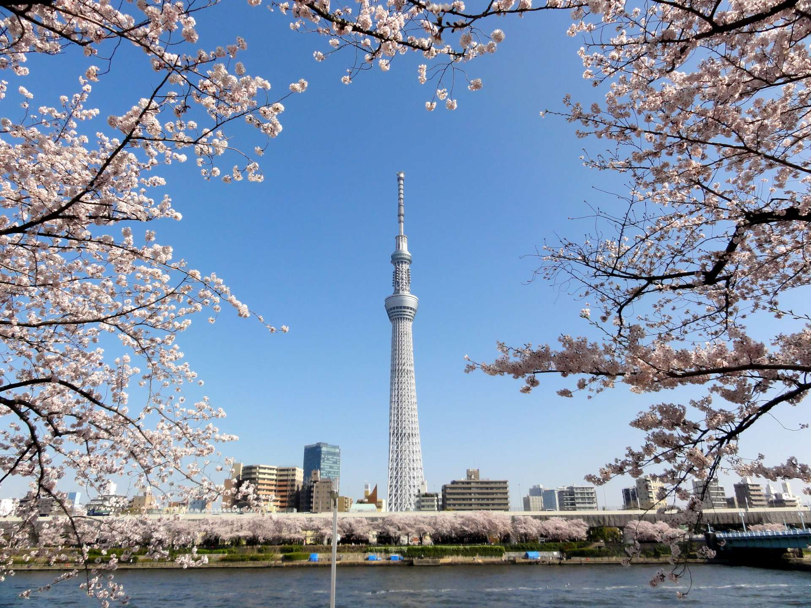

1 / 3
東京晴空塔
2 / 3

東京晴空塔
3 / 3

東京晴空塔
東京晴空塔高度634公尺，是金氏世界紀錄認證「世界第一高塔」，也是目前世界第二高建築物 (第一為哈里發塔)。
東京晴空塔，又譯稱東京天空樹、新東京鐵塔，是位於日本東京都墨田區的電波塔，由東武鐵道及其子公司東武塔晴空塔共同籌建，於2008年7月14日動工，2012年2月29日完工、同年5月22日正式啟用。
東京代表景點TOKYO SKYTREE TOWN 東京晴空塔，其實不只有絕景、夜景能欣賞，就連塔下也值得花時間慢慢玩。從1樓到445樓，多樣玩法、多種美食、限定伴手禮，一不小心就能花一天時間在晴空塔！本篇介紹晴空塔底層到塔頂的玩樂指南、交通、周邊景點，事前規劃好路線行程，才能玩得更盡興！
東京晴空塔的設計監督由雕刻家——澄川喜一負責。設計並採用了日本刀中被稱為「反」的弧度部分，及可在神社、寺院的柱子中看到被稱為「起」的隆起部分等，具有日本代表性的形狀設計。
在 350 樓的天望甲板觀賞到的東京遼闊景色，已經相當美麗且震撼了，但畢竟是東京首屈一指的地標，不論平日、假日，前往觀賞的遊客數量真的非常驚人。如果你偏好愜意一點的行程，不喜歡人擠人的話，推薦可以加票價前往位於 450 公尺的天望回廊。東京晴空塔的天望回廊是採用玻璃帷幕的環狀回廊，旅客能在地上450公尺高的回廊上行走，一邊體驗宛如在空中散步的氣氛，一邊欣賞美景。